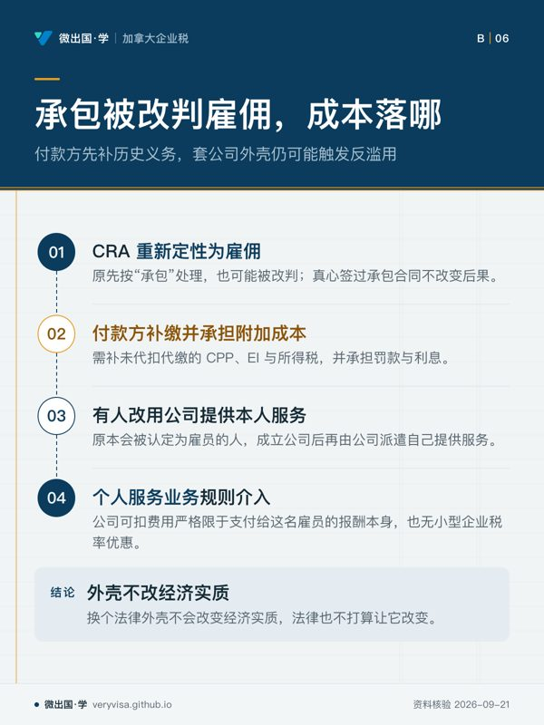
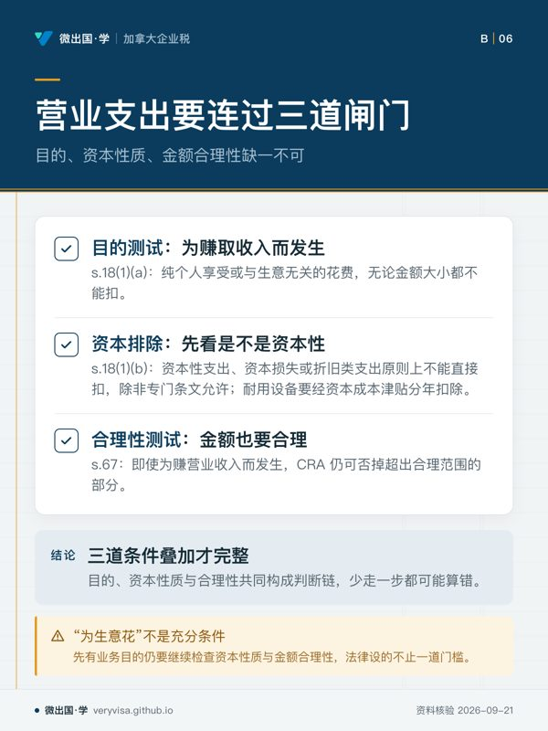
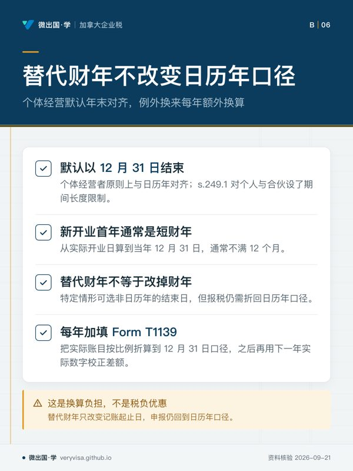

核实日期：2026-09-05｜本页口径：2026 税年（2027 年春申报）。CPP、CPP2 与 EI 的上限逐年指数化，下次复核 2027-01-31；本页引用的《所得税法》条文（s.9、s.18、s.34、s.67、s.67.1、s.111、s.249.1）为长青法条，机制层面 2027-09-01 才需重核。GST/HST 注册与费率见 ca-business-03（另篇）；家庭办公室、车辆与 CCA 见 ca-business-02（另篇）；本页只在提到处交叉引用 slug，不重复展开。
一个人开始接零工、开网店、做自由职业，第一件要弄清楚的事往往不是「怎么报税」，而是「我这算不算自雇」。这一页写给三种人：刚开始接私活、搞不清自己身份的读者；已经在填 Form T2125《营业或专业活动报表》(Statement of Business or Professional Activities) 但对表格结构一头雾水的自雇者；以及想搞清楚「自雇的 CPP 为什么要交双份」的学员。读完你应该能做到三件事：用四因素测试判断一段关系是雇佣还是自雇；把一年的营业收支正确归位到 T2125 的五个部分，算出该报在 T1 表 line 13500 的净利润；算清楚这笔利润要交多少 CPP、要不要选择加入 EI、什么时候申报、什么时候缴税、亏损了又能往哪里用。
46
一、制度设计与底层逻辑：为什么「你自己怎么想」不算数
1.1 判定雇员还是自雇，赌注不是称呼，是谁扣谁的钱
雇佣关系与自雇关系在法律后果上完全不对等。雇主要对雇员代扣代缴所得税、CPP 与 EI，自己再垫一份雇主等价的 CPP 与 EI；雇员的工作相关支出能扣的极少（限于 T2200 授权的那几类）。自雇者则完全相反：付款方不代扣任何东西，自雇者自己一次性把 CPP 两份都交齐，营业支出的扣除范围也宽得多。这笔差额正是双方都有动机把关系说成对自己有利的那一种的原因——付款方想省下雇主那一份代扣代缴成本与责任，把关系包装成「外包给独立承包商」；接受服务的一方有时也想被算作自雇，好扣更多支出。加拿大税务局 (CRA) 不看双方签的合同怎么写、双方口头怎么称呼，只看关系的经济实质。
CRA 与法院沿用的判定框架源自联邦上诉法院在 Wiebe Door Services Ltd. 一案里确立的思路，核心是四组问题：控制 (control)——谁决定怎么干活、什么时候干、用什么方法；工具 (tools)——干活用的设备、场地、材料是谁提供、谁承担维护成本；利润机会与亏损风险 (chance of profit / risk of loss)——这个人能不能通过压低成本、提高效率而多赚，会不会因为经营不善而自己承担亏损；整合程度 (integration)——这个人的工作是不是被整合进付款方的日常运营，还是作为外部服务独立存在。CRA 的判定指南 RC4110, Employee or Self-Employed? 把这四组问题落到一张事实清单上，任何一段关系都要逐条对照，没有单一因素能一票定音，必须综合权衡。一个自带工具、能自主决定工作方法、自负盈亏、只是偶尔接单的网约车司机或自由撰稿人，大概率落在自雇一侧；一个被要求在指定时间、指定地点、按指定方法工作，出了错由对方担责的人，无论合同怎么写，都可能被重新定性为雇员。
判错的代价不对称，且落在付款方头上更重。 如果 CRA 重新定性一段被当作「承包」处理的关系为雇佣，付款方要补缴未曾代扣代缴的 CPP、EI 与所得税，还要承担罚款与利息——即使当初双方是真心实意签的承包合同。这也是为什么加拿大所得税法专门设了一条反滥用规则：如果一个原本会被认定为雇员的人，通过成立公司再由公司派遣自己提供服务的方式规避雇佣关系，这家公司会被定性为「个人服务业务」(personal service business)，其可扣除的费用被严格限制在支付给这名雇员的报酬本身，也无法享受小型企业税率优惠——换个法律外壳不会改变经济实质，法律也不打算让它改变。
1.2 为什么权责发生制是默认值，现金制反而是例外
判定完身份，第二个制度设计问题是：一笔生意上的钱，该在什么时候算作收入或支出？现金制 (cash method) 按实际收付款的那个财年记账，简单直观；权责发生制 (accrual method) 按收入或支出实际归属的财年记账，不管钱哪天到账或哪天付出去。二者算出的当年利润可能差很多，尤其是年底前后有大额应收应付的时候。税法默认要求权责发生制，理由很直接：利润的真实含义是「这一年你的经营活动实际创造了多少价值」，而不是「这一年你手头进出了多少现金」——现金流入流出的时点很容易被人为提前或推迟，用来操纵某一年的应税所得。法律只给了三类人使用现金制的空间：农民、渔民、以及按佣金计酬的销售代理人，因为这几类人的收入结构本身就有强烈的季节性或滞后性，用权责发生制反而会扭曲当年利润，且这个空间是可选而非强制的——即使是这三类人，也可以选择改用权责发生制。
利润的法律定义本身就是这套逻辑的源头。 《所得税法》(Income Tax Act, ITA) s.9(1) 只用一句话定义营业收入：一个纳税人某一税年从营业或财产取得的收入，就是他从这项营业或财产取得的「利润」(profit)（加拿大联邦法规库）。法条没有给「利润」列一张计算公式或费用清单——它把「什么算利润」这个问题交给了公认会计实务与后续条文（s.18 起的各项限制）去回答。这解释了 T2125 表为什么看起来像一张损益表，而不是一张「勾选你符合的扣除项」清单：它就是在按会计上计算利润的逻辑，把收入减掉成本与费用，只是每一项扣除都要先过 s.18 与 s.67 这两道法定闸门。
1.3 扣除凭什么能扣：三道闸门，不是一道
自雇者最容易想当然的地方是「这笔钱是为生意花的，所以能扣」。法律设了不止一道门槛。第一道，目的测试：s.18(1)(a) 规定，一笔支出要能扣，前提是它是「为了赚取或产生这项营业或财产的收入」而发生的（加拿大联邦法规库）——纯粹为了个人享受、与生意无关的花费，无论金额大小都过不了这一关。第二道，资本排除：s.18(1)(b) 明确禁止扣除资本性支出、资本损失或折旧类的支出，除非有专门条文特别允许（加拿大联邦法规库）——买一台能用好几年的设备与买一沓打印纸不是一回事，前者要通过资本成本津贴 (CCA) 分年扣除，不能在购买当年一次性全部冲掉。第三道，合理性测试：即使一笔支出确实是为了赚营业收入而发生的，s.67 还要求金额本身必须「在情理之中合理」，CRA 可以只否掉超出合理范围的那一部分（加拿大联邦法规库）——花大钱包装成营业支出但明显超出行业正常水平的部分，扣不掉。这三道闸门叠加起来，才是「这笔钱到底能不能扣、能扣多少」的完整判断链，少走一步都可能算错。
1.4 CPP 为什么自雇要交双份：因为你同时是雇员也是雇主
雇员的 CPP 供款分两半：雇员自己扣一半，雇主对等再交一半，两半合起来才是这份收入应缴的全部 CPP。自雇者没有另一个雇主替他交那一半，制度设计的解法是让自雇者一个人把两份角色的供款都担起来——法律上，自雇者的营业净利润被同时视为「作为雇员赚的」与「作为雇主支付的」两笔基础，各自适用一次供款率，加总就是雇员费率的两倍。这不是对自雇者的惩罚，而是维持「缴费—给付」对价关系的必然结果：CPP 退休金的计算基础是一生的可供款收入，如果自雇者只交半份，将来领到的退休金却按全额收入计算，等于让所有其他缴费人替他补贴差额。详细的年度供款上限与指数化机制见 ca-core-04-cpp-ei-employment-deductions（雇员侧的完整推导），本页第二节只补自雇者独有的「双份」计算与申报落点。
二、2026 税年现行规则与数字
2.1 四因素测试落到清单上：RC4110 怎么问
CRA 的判定实务把四组问题拆成一张更细的清单：付款方是否规定了具体的工作方法、工时、地点（控制）；工具、设备、材料由谁提供，损耗与维修费用谁承担（工具）；这个人能不能同时为多个客户工作，能不能雇助手或转包（整合与独立性的一个侧面）；这个人是否要自担经营亏损的风险，能不能通过提高效率而多赚（利润机会与风险）。日间托儿工作者是这套测试最常被拿出来讨论的场景之一：CRA 的口径是，一个在自己家里提供日托服务、自行决定收费与作息、自担场地与耗材成本的人，通常会被认定为自雇；但如果这份工作是被另一家托儿机构统一排班、统一定价、只是借用这个人的住所，判断结果可能相反。同一份工作，换一种安排方式，税务身份就可能翻转——这正是为什么判定必须逐案核对事实，不能套用职业名称一刀切。
2.2 Form T2125 的骨架：五个部分怎么走
Form T2125《营业或专业活动报表》按信息颗粒度从粗到细分成五个主要部分。Part 1 是识别信息：业务地址、财年起止日期、主营业务性质与行业代码、会计方法（权责制或现金制，仅限合资格的现金制使用者可选）、独资或合伙及各自占比。Part 2 只在业务通过网站或平台产生收入时才需要填写，登记网址与来自网络渠道的收入占比。Part 3 是最关键的分岔口：有营业收入 (business income) 的人填 Part 3A，有专业收入 (professional income) 的人填 Part 3B——区分标准不是收入多少，而是这份工作是否属于「蕴含专门知识、区别于单纯技能的职业」，法院给出的例子包括建筑师、工程师、IT 顾问，不限于会计师、律师、医生这几类传统「专业人士」；同时有两类收入的人必须分别填两张 T2125。这一区分的实质后果是存货与在制品 (work-in-progress, WIP) 的处理方式不同：营业者按期末存货成本入账，专业人士则必须把尚未完工、尚未开票的服务价值（按成本与公允市价孰低）计入期末收入，这一点在 §五「历史变革」里详细展开。Part 4 汇总成本与费用，算出扣除资本成本津贴 (CCA) 之前的净利润；Part 5 再扣掉本页第三节要讲的 CPP 相关调整与业务用房调整，得出最终报在 T1 表 line 13500（营业收入）或 line 13699/13700（专业收入）的数字。这五个部分的顺序本身就是一条计算链：识别身份→定义活动范围→归类收入性质→算出税前利润→做完最后调整落到报表。

2.3 会计基础：权责发生制是默认，现金制的窗口很窄
如 §1.2 所述，绝大多数自雇者必须使用权责发生制：收入在赚得的那个财年入账，不管钱哪天收到；支出在归属的那个财年扣除，不管钱哪天付出。只有农民、渔民和按佣金计酬的销售代理人可以选择现金制，且这是一个可撤销的选择，从现金制换回权责发生制不需要额外批准，反向操作（从权责发生制换成现金制）则需要提前书面申请并说明理由。现金制下还有一条防扭曲的补丁规则：预付的费用如果对应的是两年或以上之后的税年，不能提前在收付当年一次性扣完，必须按对应年度分摊——这条规则是为了防止用「一次性预付」人为压低当年利润。
2.4 财年末：默认 12 月 31 日，例外要靠专门申报维持
个体经营者的财年原则上必须与日历年对齐、以 12 月 31 日结束——《所得税法》s.249.1 把「财年」定义为纳税人账目为报税目的编制的那个期间，并对个人与合伙设了不能超过日历年长度的限制（加拿大联邦法规库）。新开业的生意第一年通常是一个不满 12 个月的短财年，从实际开业那天算到当年 12 月 31 日。CRA 在行政上允许特定情形选择一个非日历年的替代财年结束日（俗称 alternative method），但这不是把财年本身改掉，而是要求纳税人每年额外填报 Form T1139《营业所得税务用途调节表》，把实际账目按比例折算回一个以 12 月 31 日为界的估算应税所得，年底再用下一年实际数字校正差额——换句话说，替代财年只改变了记账的起止日，报税时仍然要换算回日历年口径，这是一项行政上的换算负担，不是一项税负上的优惠。
2.5 三道闸门之外：五类高频费用速览
在 §1.3 的三道闸门基础上，几类费用有各自的专门规则：
餐饮娱乐费：按《所得税法》s.67.1(1)，餐饮或娱乐支出先取「实际支付金额」与「情理之中合理的金额」两者较小值，再打五折才能扣（加拿大联邦法规库）——这是继 s.67 一般合理性测试之后又加的一层限制，专门针对餐饮娱乐这类天然容易掺杂个人享受的支出。法条对长途货车司机单独规定了不同的比例（s.67.1(1.1)），考试口径写的「长途货车司机可扣 80%」与现行条文一致，不属于考试口径过时的错位。
坏账：所得税上的坏账扣除要求这笔款项此前已经计入过收入，且在当年被认定为收不回来才能扣（对应《所得税法》s.20(1)(p) 的一般原则）；这与 GST/HST 的坏账调整是两条平行但独立的规则——所得税坏账在写坏账的当年扣，GST/HST 的坏账调整则可以在写坏账年度起四年内的任何一年申报，两个期限不同步，见 ca-business-03（另篇）。
开办费用：在生意实际开始运营之前发生的支出原则上不可扣除——法律要求纳税人已经在从事这项营业活动，才谈得上「为赚取营业收入而发生」；判断一门生意从哪一天算「开始」是个事实问题，通常落在租下经营场地、开始雇人、开始购置经营用的存货或设备这类实质性动作发生的那一天，仅仅是「考虑要不要做」阶段发生的探索性支出（如实地考察、市场调研）永远不能事后补扣。
专业费用：为处理与营业直接相关的法律、会计事务而支付的律师费、会计师费一般可扣；但用于抗辩与营业无关的个人刑事指控，或用于购置资本财产（如打官司争夺一处不动产的所有权）而产生的法律费用，通常要资本化而不能作为当年费用直接扣除。
现行支出 vs 资本性支出：法院在区分这两者时逐渐总结出几条常见特征——这笔钱带来的是「一次性、短期」的好处还是「持续多年」的好处；是维持资产原状的修缮，还是让资产脱胎换骨的改良；是否属于日常经营中反复发生的性质。同一类工作，出发点是「修好一件已经在用的东西」通常判现行支出，出发点是「造出一件新的、更好的东西」通常判资本支出——这条界线在涉及建筑物翻修时最容易起争议，具体的资本成本津贴分类与费率见 ca-business-02（另篇）。
2.6 自雇 CPP 与 CPP2：三年对照表
| 项目 | 2024 税年（考试口径） | 2025 税年 | 2026 税年（现行） | 状态 |
|---|---|---|---|---|
| CPP 年度最高可供款收入 (YMPE) | 68,500 元 | 71,300 元 | 74,600 元 | 已生效，逐年指数化（CRA） |
| 自雇 CPP 基础段最高供款（双份，11.9%） | 7,735 元 | 8,068.2 元 | 8,460.9 元 | 已生效（CRA 末列） |
| CPP2 年度最高附加可供款收入 (YAMPE) | 73,200 元 | 81,200 元 | 85,000 元 | 已生效；2026 起才是指数化稳态（CRA） |
| 自雇 CPP2 最高供款（双份，8%） | 376 元 | 792 元 | 832 元 | 已生效（CRA） |
| 自雇 CPP 全口径合计上限 | 8,111.0 元 | 8,860.2 元 | 9,292.9 元 | 按上两行相加，已生效 |
| EI 自愿加入者最高保费（同雇员费率，无雇主 1.4 倍） | 1,049.12 元 | 1,077.48 元 | 1,123.07 元 | 已生效（CRA） |
| 分期预缴门槛（净欠税额） | $3,000（魁省 $1,800） | 同左 | 同左 | 长青，法定值不指数化（ITA s.156.1(1)，加拿大联邦法规库） |
| 非资本亏损结转期限 | 回抵 3 年 · 结转 20 年 | 同左 | 同左 | 长青（ITA s.111(1)(a)，加拿大联邦法规库） |
年度数字总表另见 kb-02-numbers-2026（含全课所有指数化数字的统一台账）。这张表最容易被低估的一行是 CPP2：它 2024 年才起步，考试口径拿到的是爬坡第一年的数字，如果直接套用会把 2026 税年的自雇者供款算少了一倍以上——详细的爬坡机制见 ca-core-04（雇员侧的完整推导对自雇者同样适用，只是数字翻倍）。CPP 基本免税额 $3,500 三年未变（长青、不指数化），费率 5.95%（自雇双份 11.9%）与 CPP2 费率 4%（自雇双份 8%）也三年未变——变的只有上限，不是比例。
2.7 CPP 供款怎么落到报表上：Schedule 8、两条线、两种性质
自雇者的 CPP 供款不是简单地报在一行，而是先在 Schedule 8（跨省供款用 Form RC381）上算出总额，再按「角色」拆成两条线：Line 31000 报「雇员等价那一半」的基础供款，走非退还抵免，按最低税阶率折算，人人享受同等税收利益（CRA）；Line 22200 报「雇主等价那一半」基础供款加上全部增强段（CPP2 与第一层增强），走扣除，按各人的边际税率折算，边际税率越高的人省得越多（CRA）。这套一分为二的处理方式，本质上是把雇员与雇主两个角色分别套用它们各自在雇佣关系里原本适用的税收待遇——自雇者作为「雇主」替自己交的那一半，逻辑上等同于雇主替雇员交的那一半，从来不是雇员本人的应税所得，所以走扣除；自雇者作为「雇员」交的那一半，逻辑上等同于雇员自己的供款，走抵免。已满 65 岁不满 70 岁、正在领取 CPP 的自雇者，可以在 Schedule 8 上直接填写停止供款生效的月份，这一点比雇员方便：雇员必须提前把 Form CPT30 交给雇主才能生效，自雇者则可以在报税时追溯选择停缴月份，但仍必须在申报期限内交表才算数。
2.8 EI：自雇者的选择加入制度
自雇者默认不缴纳 EI，也无权申领常规失业给付，但可以自愿注册加入 EI 特殊福利计划，换取生育、育儿、疾病、同情护理与家庭照顾者福利的资格（不含常规失业给付本身）。注册只能通过 My Service Canada Account 在线完成，且有 12 个月的等待期——注册当年不能立刻申领。保费按全年的自雇收入计算，不因注册时间在年初还是年底而不同，费率与最高保费和雇员完全一致（见 §2.6 表），唯一的区别是自雇者不必再多交雇主那 1.4 倍的份额，因为自雇者从未被当作自己的雇主对待。当年保费在 Schedule 13 上算出后填入 T1 表 line 42120（计入应缴税款），并对应在 line 31217 申领一笔非退还抵免。这项选择一旦真正申领过一次福利，就永久生效、无法退出；如果从未申领过福利，可以随时退出，若在注册后 60 天内退出则连当年保费都不必缴，超过 60 天退出则要缴满当年全年的保费。
2.9 申报与缴税：两个日期，别弄混
个人所得税一般申报期限是次年 4 月 30 日；但如果本人或配偶/普通法伴侣当年经营自雇业务，申报期限延后到次年 6 月 15 日——这条延期写在《所得税法》s.150(1)(d) 里（加拿大联邦法规库），也在 CRA 关于婚姻状况的现行指引里被重申（CRA）。但欠税的缴税期限没有跟着延后，仍然是 4 月 30 日：如果一名自雇者等到 6 月 15 日才申报，且发现有欠税，从 5 月 1 日起就要按规定利率计息，只是不会因为「按期在 6 月 15 日前申报」而额外被课迟报罚款。这是本页最容易被误解成「6 月 15 日之前都不算晚」的一条规则——延后的是申报，不是缴税。
对于当年及未来预计仍有相当营业净利润、净欠税额可能超过法定门槛（$3,000，魁省 $1,800）的自雇者，还要按季分期预缴下一年度的税款，四个固定到期日是 3 月 15 日、6 月 15 日、9 月 15 日、12 月 15 日（CRA），农渔业自雇者是唯一的例外，全年只有 12 月 31 日一期。分期预缴不是「提前多交税」，而是把这一年正在赚的收入对应的税款，按季度分摊到当年缴纳，与年底汇算清缴是同一笔税款的两种缴付节奏，不是两笔钱。
2.10 亏损：抵其他收入，还能结转 20 年
自雇营业活动如果当年出现亏损，这笔亏损首先会与本人当年其他来源的收入（如雇佣收入、投资收入）相抵，降低当年总应税所得；如果抵完当年其他收入后仍有剩余，剩余部分成为非资本亏损 (non-capital loss)，可以回抵此前 3 个税年，或者结转以后 20 个税年 抵扣未来任何来源的收入（加拿大联邦法规库）——这个期间是法定值，不随指数化调整，也不因营业规模大小而改变。这与专门针对资本利得的净资本亏损规则完全不同（只能抵资本利得、回抵 3 年、无限期结转，详见 ca-invest-02-capital-gains），两套亏损规则不能混用、不能互相顶替：营业亏损抵不了的部分不会自动变成净资本亏损，反之亦然。
三、实务流程：一年下来该走哪几步
第一步，判身份：对照 §一与 §2.1 的四因素测试，确认这段关系是雇佣还是自雇，如果不确定，越靠近「自己承担经营风险、自主决定工作方式」这一端，越可能是自雇。第二步，选会计方法与定财年：绝大多数人默认权责发生制、财年对齐日历年，只有农渔业者与佣金销售代理人有现金制的选择空间。第三步，归类收入：按业务活动是否构成「专门知识的职业」区分营业收入（Part 3A）还是专业收入（Part 3B），专业人士还要在期末核实并计入 WIP。第四步，逐项归位成本与费用：把全年支出按 §2.5 的分类原则（目的测试→资本排除→合理性→专项限制）逐条核对是否可扣、能扣多少，算出 Part 4 的税前净利润。第五步，做最后调整：在 Part 5 里扣掉业务用房等专属调整（见 ca-business-02），得出报在 T1 表 line 13500/13699 的最终数字。第六步，算 CPP、决定 EI：用 Schedule 8 算出应缴 CPP 并按 §2.7 分拆填入 line 22200 与 line 31000；如果已经或打算选择加入 EI 特殊福利，用 Schedule 13 算出保费填入 line 42120，领取 line 31217 的抵免。第七步，核对截止日：确认自己是否适用 6 月 15 日的申报延期，并单独记住欠税仍按 4 月 30 日计息；如果预计下一年仍有可观净利润，提前规划好四个分期预缴日期。第八步，处理亏损（如有）：先抵当年其他收入，剩余部分决定回抵还是结转，别与资本亏损混算。
四、联邦之外：BC 这条怎么走
BC 没有为自雇营业收入单独设一张省级申报表——联邦算出的营业净利润直接并入个人应税所得总额，再按 BC 省个人所得税阶乘算省税，不存在「省级 T2125」这回事。BC 与联邦口径的差异主要体现在几个衔接点上：WorkSafeBC（工伤保险）对多数行业的雇主是强制注册，但对没有雇员、以个人身份承揽工作的自雇者，注册通常是自愿的（少数高风险行业除外），这与本页讨论的 EI 自愿加入机制是两套完全独立的制度，一个管失能失业期间的收入替代，一个管工伤责任分担，不能互相替代或互相视为已经覆盖。跨省经营的自雇者（例如常驻 BC 但客户或经营场所分布在其他省）需要留意营业所得是否在某个省构成「常设机构」意义上的经营存在，这会影响该省级税务的分摊比例，具体规则属于更专门的跨省分摊主题，本页不展开。GST/HST 在 BC 的落点是联邦 GST（BC 未参与 HST 统一征收，维持独立的省销售税 PST 体系），注册与征收机制见 ca-business-03（另篇）。
五、历史变革：一项被整条废除的选举
在 2017 年之前，法定名单上的六类指定专业人士——会计师、牙医、律师（含魁省的公证人）、医生、脊医、兽医——可以选择性地把期末在制品 (WIP) 的价值排除在当年收入之外，等到真正开票收费的那一年再确认收入，这种做法俗称「按开票入账」(billed-basis accounting)。这项选择的实际效果是让这几类专业人士享有一项其他自雇者没有的税收优势：与 WIP 相关的成本可以在发生当年立即扣除，而对应的收入却可以推迟确认，形成时间价值上的好处。2017 年度预算把这项选择连同它所依据的条文一并废除——《所得税法》s.34 的现行合订本条文全文只剩一句「[Repealed, 2017, c. 33, s. 7]」（加拿大联邦法规库）。对在废除生效前已经用过这项选择、账上还留有未确认 WIP 余额的专业人士，法律给了一个五年的过渡期，要求把余额按每年 20% 的比例分批带回收入（首年 80% 留在表外、第二年降到 60%，以此类推），这个过渡期早已在 2022 税年之前走完。换句话说，任何还在教这项选举、教「专业人士可以延迟确认 WIP」的材料，讲的是一条已经彻底不存在的规则——现行规则下，所有专业人士都必须在每个财年末，把尚未完工也尚未开票的服务价值按成本与公允市价孰低计入当年收入，没有例外，也没有选择空间。考试口径如果按当年的选举写例题，读者要清楚那只是历史场景重现，不能照抄进 2026 税年的申报。
六、案例：三个本地场景（人名与数字均为示例）
6.1 素里的网约车司机：判身份先于算税
阿伦在素里全职开网约车，平台按每单抽成后把余款打给他，年底平台发来一张信息单但没有代扣任何税款。阿伦自己决定几点上线、开哪条路线、要不要接某一单；车是他自己的车贷买的，油费保养费都是自己出；某个月生意差，他自己承担收入下滑，平台不会因此补贴他。对照四因素测试：控制权在他自己手上、工具（车辆）自备、利润与风险自担、工作没有被整合进平台的固定排班——这几项特征清楚地把他判定为自雇，而不是网约车平台的雇员。他的营业收入报在 T2125 Part 3A（这属于营业收入而非专业收入），车辆相关的费用可以按业务使用比例扣除（具体的公里数记录法与限额见 ca-business-02）。全年净利润 $52,000，按 §2.6 的 2026 税年数字，他要交的 CPP 基础段与 CPP2 双份合计逼近全年上限区间的中段，具体金额要按 Schedule 8 逐项代入他的实际净利润计算，不能直接套用表中列出的「最高」数字——那是收入达到或超过 YMPE、YAMPE 时才会封顶的数字。
6.2 列治文的自由职业设计师：从「考虑要不要做」到「正式开始」
美琳是平面设计师，2 月份还在犹豫要不要辞职单干，期间报名了几场行业展会、买了些参考书；4 月她正式签下第一个客户合同、租下一个共享工作室工位、购置了绘图软件订阅——这一天才是她的生意在税法意义上「开始」的那一天。2 月那几笔报名费与参考书钱属于「考虑阶段」的探索性支出，即使后来生意真的开起来了，这些钱也永远不能事后补扣；4 月之后的软件订阅费、工位租金则是正常的营业费用，按权责发生制归入各自对应的月份。她的第一个财年是一个从 4 月到 12 月 31 日的短财年，不是完整的 12 个月——这不影响她随后每年都用完整的日历年财年。
6.3 温哥华的执业会计师：一条已经用不上的历史规则
陈会计师执业超过 20 年，她的父辈也做这一行，家里至今保留着一份 2016 年的旧报税单，上面赫然写着一笔「WIP 排除额」。她的新助理照着这份旧单据的格式,以为今年也能把年底还没开票的项目工时排除在收入之外——这个做法在 2018 税年之后就已经不再合法。陈会计师今年年底有一批已完成但尚未开票的审计工作，成本已经发生、客户账单还没寄出，她必须按成本与公允市价孰低，把这批 WIP 的价值计入当年收入，不能援引父辈当年用过的老办法。这个案例说明的不是一条计算错误，而是考试口径与旧单据里的「历史正确」在今天已经变成「现行错误」——判断一条规则能不能用，要看它现在还在不在法条里，不能看它当年写没写进过某张真实的申报单。
七、常见错报与自查清单
- 把「合同写的是承包」当成自雇的证据——CRA 看的是控制、工具、利润风险、整合四组事实，不是合同用词；自查：如果对方规定了具体工时、工作方法，且出错由对方担责，即使合同写「独立承包商」也可能被重新定性为雇佣。
- 以为 6 月 15 日之前欠税都不算晚——申报延期不等于缴税延期；自查：核对当年是否会欠税，若会，尽量在 4 月 30 日前预估并缴纳，避免从 5 月起计息。
- 把探索阶段的花费当营业费用扣——法律要求已经实际在经营，才谈得上营业支出；自查：明确标出生意「正式开始」的那一天（第一份合同、第一次实质性经营行为），之前的花费一律不能扣。
- 忘记 CPP2 已经进入新的稳态——很多沿用旧例题的材料还停留在 2024 年爬坡首年的数字；自查：核对当年 YAMPE 与自雇 CPP2 上限是否用了 §2.6 表格里对应税年的数字，不要套用考试口径印刷时的旧值。
- 专业人士仍在按老办法排除 WIP——这项选举早已被整条废除；自查：期末检查是否有已完成但未开票的工作，若有，必须按成本与公允市价孰低计入当年收入。
- 把营业亏损和资本亏损混着用——两套规则期限不同、抵扣对象不同；自查：亏损来自出售资本财产还是来自营业本身，决定它走哪一套结转规则。
- 把 EI 保费按雇员的 1.4 倍雇主份额多算或少算——自雇者只按雇员费率交一份，没有雇主那一份；自查：核对 Schedule 13 算出的保费是否等于净收入乘以当年 EI 费率，且未超过当年最高保费。
术语双语对照
| English | 中文 | 一句话机制 |
|---|---|---|
| sole proprietor | 独资经营者 | 与经营者本人无独立法律地位，收入并入个人报税表 |
| Wiebe Door test / four-factor test | 四因素测试 | 控制、工具、利润机会与风险、整合程度，综合判定雇佣或自雇 |
| RC4110, Employee or Self-Employed? | 《雇员或自雇？》指南 | CRA 判定身份的官方操作指引 |
| personal service business | 个人服务业务 | 反滥用规则，实质为雇员却借公司名义提供服务，扣除与税率优惠均受限 |
| Form T2125, Statement of Business or Professional Activities | T2125《营业或专业活动报表》 | 自雇者申报营业或专业收支的核心表格 |
| business income | 营业收入 | T2125 Part 3A，按存货成本法核算期末库存 |
| professional income | 专业收入 | T2125 Part 3B，须按成本与公允市价孰低计入期末 WIP |
| work-in-progress (WIP) | 在制品 | 专业人士尚未完工/开票的服务价值，2017-03-22后开始的税年起取消原选择，按五年过渡逐步计入，2026不再有该过渡 |
| accrual method | 权责发生制 | 收入按赚得归属年入账，支出按归属年扣除，与实际收付款时点无关 |
| cash method | 现金制 | 仅农民、渔民、佣金销售代理人可选，按实际收付款时点记账 |
| fiscal period | 财年 | 个人营业默认对齐日历年，12 月 31 日结束（ITA s.249.1） |
| alternative method | 替代财年换算法 | 用 Form T1139 把非日历年账目折算回 12 月 31 日口径的行政机制 |
| profit (s.9) | 利润 | 营业收入的法定核心定义，无列举式扣除清单，靠 s.18/s.67 逐条限制 |
| purpose test (s.18(1)(a)) | 目的测试 | 支出须为赚取营业收入而发生，才有资格进入扣除范围 |
| capital outlay exclusion (s.18(1)(b)) | 资本排除 | 资本性支出默认不可当期扣除，须走专门条文（如 CCA）分年处理 |
| reasonableness test (s.67) | 合理性测试 | 即使通过目的测试，金额仍须情理之中合理，超出部分不可扣 |
| meals and entertainment 50% rule (s.67.1) | 餐饮娱乐五折规则 | 实付与合理金额孰低后再打五折，长途货车司机适用不同比例 |
| bad debt deduction | 坏账扣除 | 此前已计入收入、当年确认收不回的部分可扣，与 GST/HST 坏账调整规则各自独立 |
| non-capital loss | 非资本亏损 | 营业亏损抵完当年其他收入后的余额，回抵 3 年、结转 20 年 |
| net capital loss | 净资本亏损 | 仅抵资本利得，回抵 3 年、无限期结转，与非资本亏损不可混用 |
| base CPP contribution | CPP 基础供款 | 基础段与第一增强段合并费率；只有雇员等价基础段走抵免，雇主等价基础段及全部增强段走扣除 |
| CPP2 (second additional CPP contribution) | CPP2（第二层增强供款） | YMPE 至 YAMPE 区间按 4% 计（自雇双份 8%），2024 年起逐步爬坡 |
| Schedule 8 | 附表八《CPP 供款与超缴》 | 自雇 CPP 供款的计算表，结果分拆落到 line 22200 与 line 31000 |
| Line 22200 | 第 22200 行 | 自雇 CPP 供款中「雇主等价份额＋全部增强段」，走扣除 |
| Line 31000 | 第 31000 行 | 自雇 CPP 供款中「雇员等价份额」，走非退还抵免 |
| EI special benefits for self-employed | 自雇者 EI 特殊福利 | 自愿注册，12 个月等待期，一旦申领即永久生效 |
| Schedule 13 | 附表十三《自雇 EI 保费》 | 计算自雇者应缴 EI 保费，结果落到 line 42120，抵免落到 line 31217 |
| instalment payments | 分期预缴 | 净欠税超门槛（$3,000）者按季预缴下一年度税款，四个固定到期日 |
| Form T1139 | 替代财年调节表 | 非日历年财年纳税人每年用它折算回 12 月 31 日口径的应税所得 |
来源
法条（现行合订本，Act current to 2026-06-21）：s.9 利润与亏损定义（加拿大联邦法规库）· s.18(1)(a)/(b)/(h) 扣除总限制（加拿大联邦法规库）· s.34 已废除的 WIP 排除选举（加拿大联邦法规库）· s.67 合理性测试（加拿大联邦法规库）· s.67.1 餐饮娱乐五折规则（加拿大联邦法规库）· s.111(1)(a) 非资本亏损回抵结转期限（加拿大联邦法规库）· s.150(1) 申报期限（加拿大联邦法规库）· s.156.1(1) 分期预缴门槛（加拿大联邦法规库）· s.249.1 财年定义（加拿大联邦法规库）。
CRA 现行页面：CPP 供款率与上限（CRA）· CPP2 供款率与上限（CRA）· EI 保费率与上限（CRA）· 分期预缴到期日（CRA）· 婚姻状况页（含自雇 6 月 15 日延期，CRA）· Line 22200（CRA）· Line 31000（CRA）。
本页知识卡
不看正文也能拿到这一节的核心内容：先看导读，再看图。点图放大，左右翻页。
- 先看先分四个观察面：谁指挥、谁出生产资料、谁担经营结果、工作如何嵌入业务。
- 易漏签了“独立承包商”也不能锁定身份；单个有利事实同样不够。
- 下一步去知识卡逐项写下实际安排；有争议时带事实记录问持牌专业人士。

- 先看从风险传导看：先回头补历史款项，再看设公司是否真的改变税务结果。
- 易漏即使双方当时都认可承包安排，之后仍可能被重新定性。
- 下一步去讲解核对设公司是否真改身份；争议时带合同和工作事实问持牌专业人士。

- 先看先问钱为什么花，再辨是不是长期资产，最后检验金额有没有超出常情。
- 易漏与业务有关只过了第一关；耐用设备与日常耗材的税务处理并不相同。
- 下一步去练习，逐笔按三关勾选；边界项目带发票与用途说明问持牌专业人士。

- 先看先分清两件事：账簿可以按替代周期走，但个人申报的计税年度没有跟着变。
- 易漏例外并非让收入永久挪到别的年度；它要求持续做调节并在后续校正。
- 下一步去知识卡核对首年与后续换算；采用例外前带账期安排问持牌专业人士。